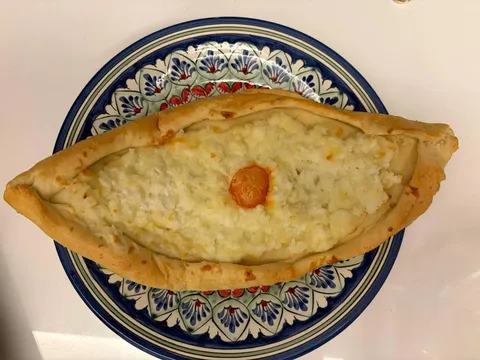
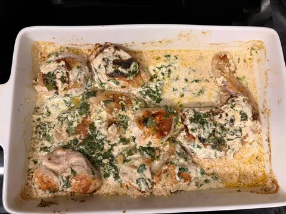
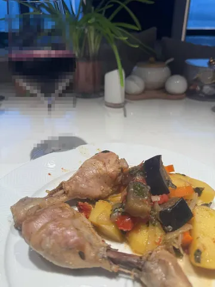
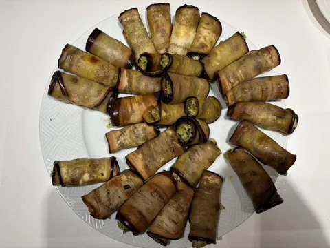
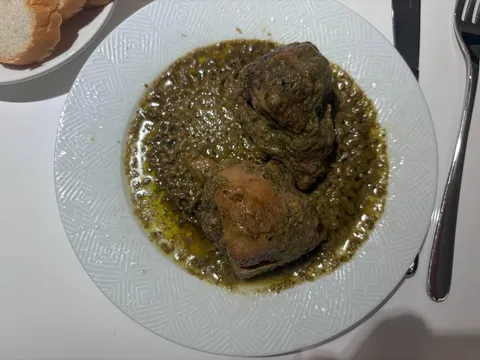
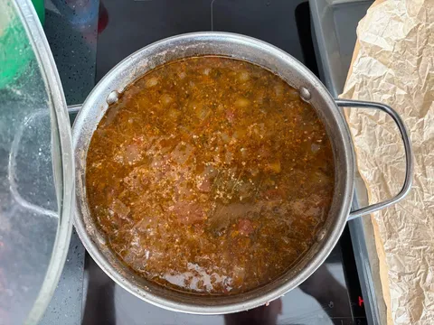

На этот раз из кубышки нам выпала Грузия. Несколько фактов о грузинской кухне в призме восприятия моей семьи:
• Долгое время коронным грузинским блюдом у нас было "Жричёдали". Рецептура вариативна, но всегда вкусно.
• Моя жена любит грузинскую кухню. И была в большои предвкушении перед путешествием в Грузию. Однако, как это бывает, во время поездки выяснилось, что во многих московских грузинских ресторанах вкуснее, чем в грузинских грузинских ресторанах. И не потому, что еда как-то адаптирована, а просто вкуснее. Парадокс.
• Но встречаются и кейсы адаптации. Например, во вчерашней пачке хинкалей внезапно обнаружился special device - небольшой пластиковый захват для эффективного удержания хинкаля за ножку. Это ли не научно-технический прогресс XXI века?
А меню этой недели состояло из
- харчо - пряный суп из мяса, лука, крупы и томатов - отлично, но в столовой Невы вкуснее (где-то не угадали с набором специй);
- хачапури - открытый сырный пирог - не стоило смешивать сулугуни и адыгейский сыр, но все равно топчик;
- чкмараули - курица в сливочно-чесночном соусе и зелени - ничего особенного, тем не менее вообще отлично;
- чанахи - курица, картофель и баклажаны в аджике - очень даже, особенно в сопровождении кинзмараули;
- бадриджани - рулетики из баклажанов с сыром, чесноком и орехами - всегда вкусно, но зависит от качества баклажанов;
- сациви - тушеные ножки в соусе из кинзы - хоть кинзу я люблю только в виду кинзмараули, это блюдо отлично зашло;
- и, конечно же, хинкали, ну а как иначе.
Итого, все классно, но если вы захотите съездить в Грузию ради хорошей кухни - могу посоветовать хороший ресторан на Пролетарке...





